Publications
Journal articles and manuscripts under review, newest first. See Google Scholar for more information.
-
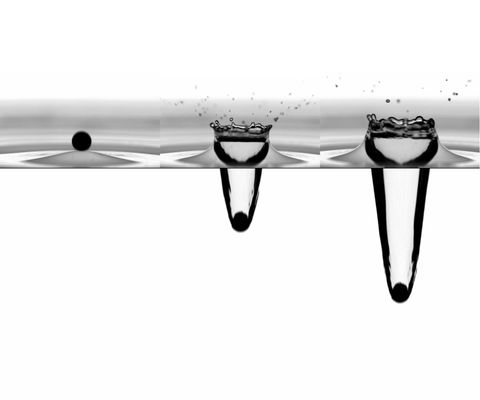
-
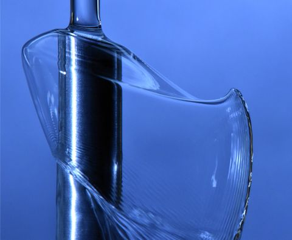
Savart's Harp
To appear in Physical Review Fluids Invited
-
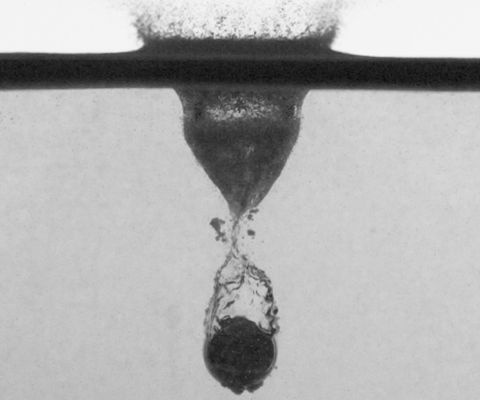
Impact of solid spheres onto buoyant granular layers
Under review
-
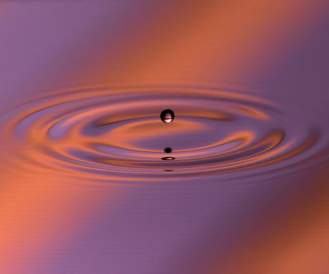
-
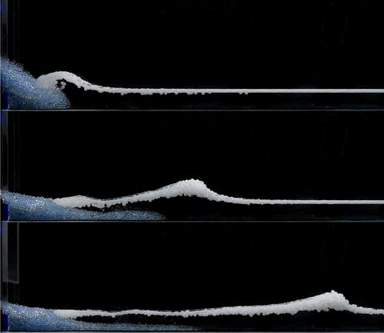
-
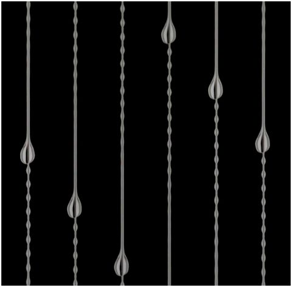
-
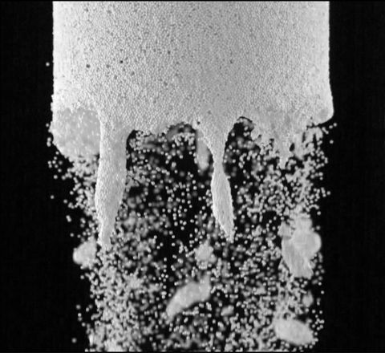
-
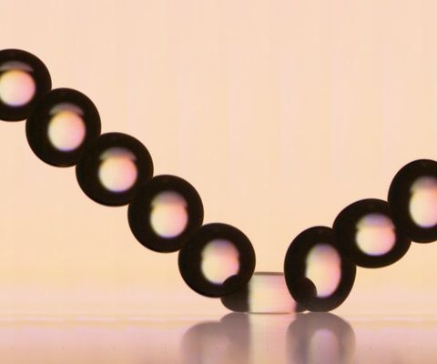
Drop rebound at low Weber number
Journal of Fluid Mechanics 1019, A25 (2025)
-
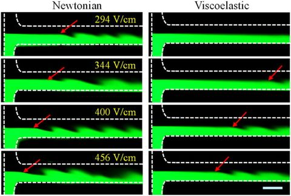
Electrokinetic instabilities in Boger fluid flows with conductivity gradients
Physics of Fluids 37, 062016 (2025)
-
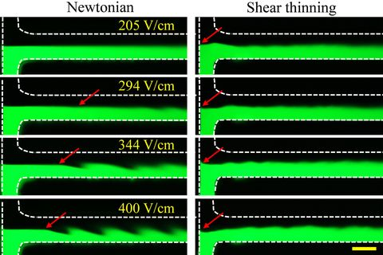
Electrokinetic flow instabilities in shear thinning fluids with conductivity gradients
Soft Matter 21(4), 699-707 (2025)
-
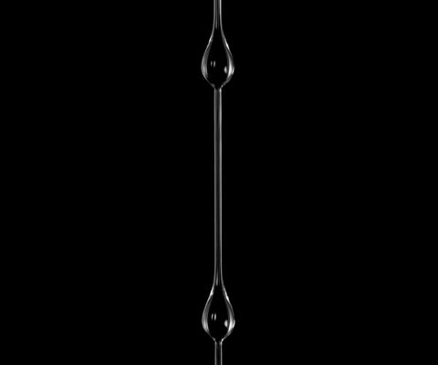
Scaling analysis for the frequency of Ostwaldian and Newtonian bead-on-fibre flows
Journal of Fluid Mechanics 1002, A12 (2025)
-
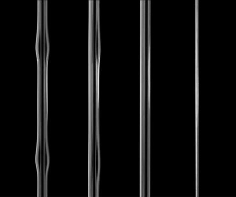
Suppressing capillary instability in falling liquid threads
Journal of Fluid Mechanics 1000, A77 (2024)
-
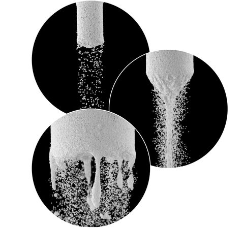
-
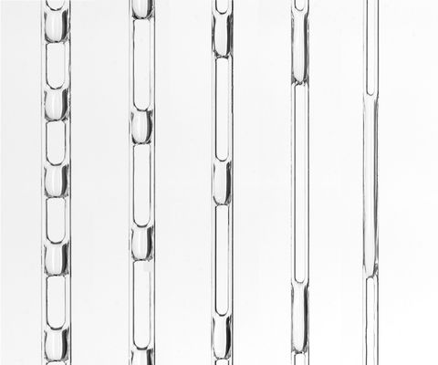
Gravity-driven flow of liquid bridges between vertical fibers
Journal of Fluid Mechanics 997, A74 (2024)
-
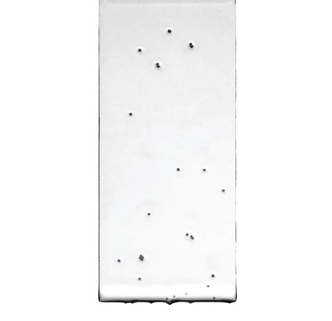
-
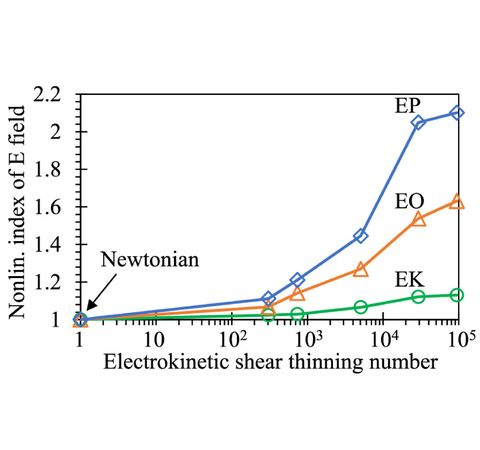
Nonlinear electrophoresis of microparticles in shear thinning fluids
Langmuir 40(38), 20113-20119 (2024)
-
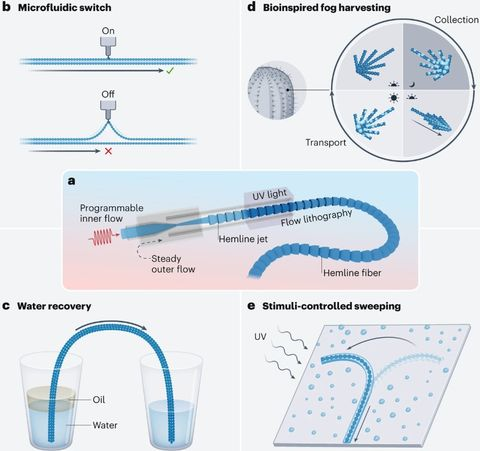
Surface-engineered microfibers provide liquid transport flexibility
Nature Chemical Engineering 1, 31-32 (2024) News and Views
-
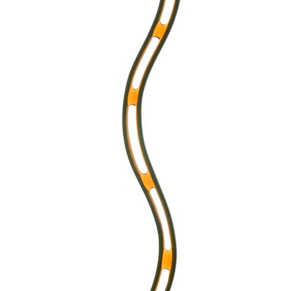
Thin film flow between fibers: inertial sheets and liquid bridge patterns
Physical Review Fluids 8(11), 110505 (2023) Invited
-
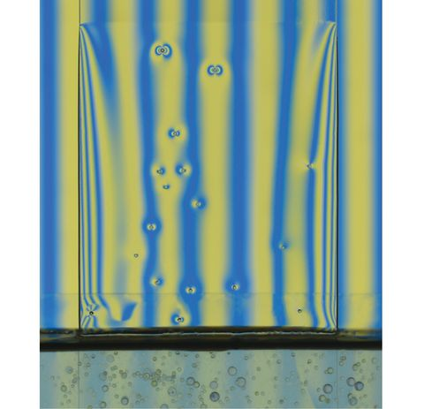
Dip coating of viscous granular suspensions
Colloids and Surfaces A: Physicochemical and Engineering Aspects 674, 131885, (2023)
-
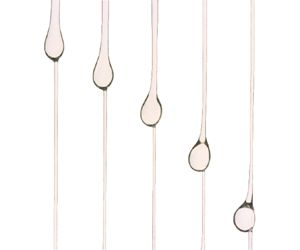
-
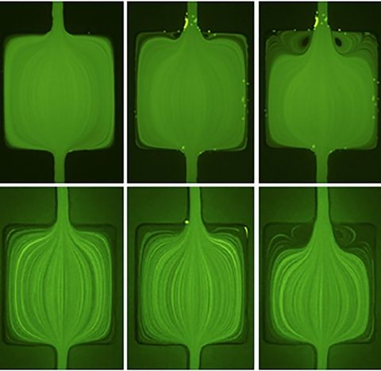
Surfactant effects on microfluidic extensional flow of water and polymer solutions
Physics of Fluids 34, 032006 (2022) Editor’s Pick
-
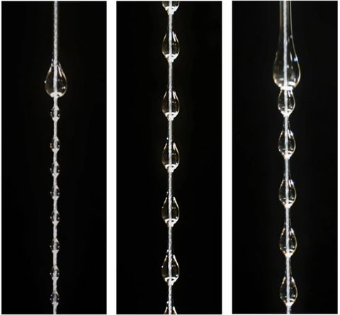
Scaling analysis of the Plateau-Rayleigh instability in thin film flow down a fiber
Experiments in Fluids 62 (2021)
-
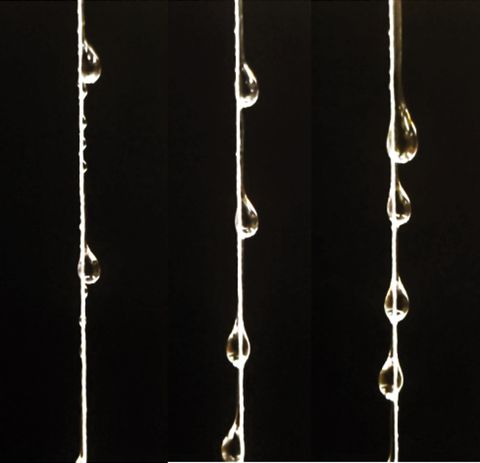
Asymmetric instability in thin film flow down a fiber
Physical Review Fluids 6(3), 034005 (2021)
-
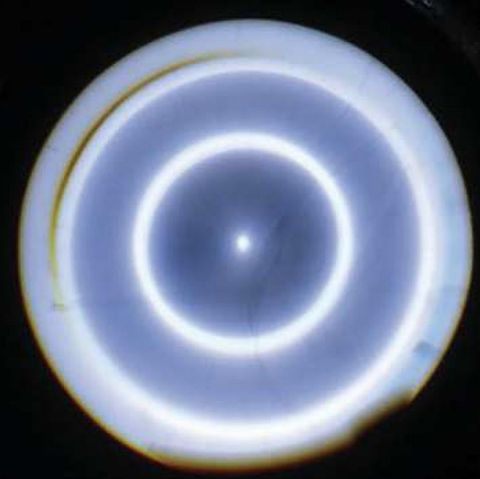
On the role of meniscus geometry in capillary wave generation
Experiments in Fluids 62, 59 (2021)